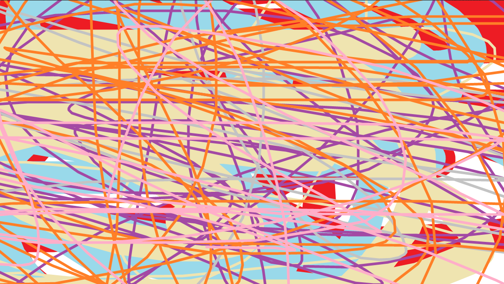
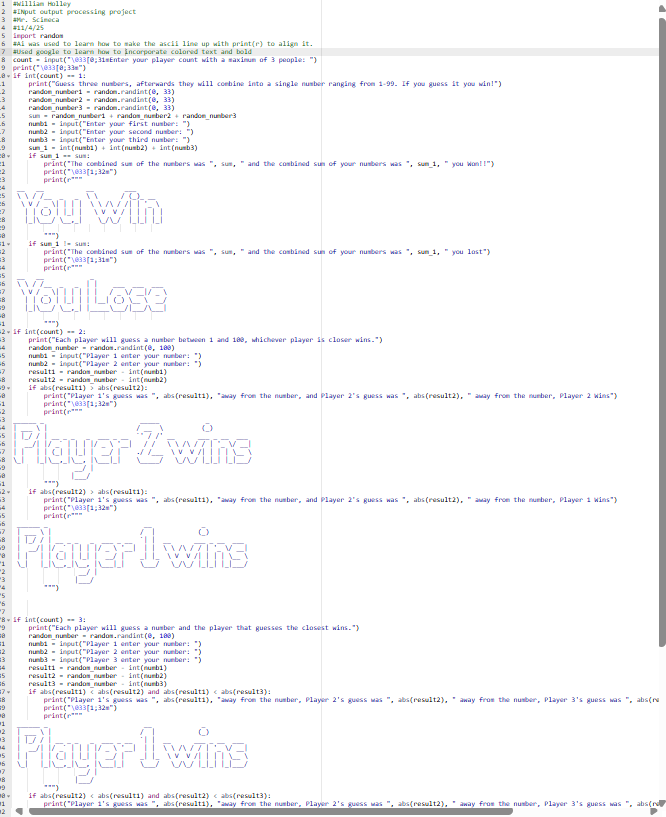
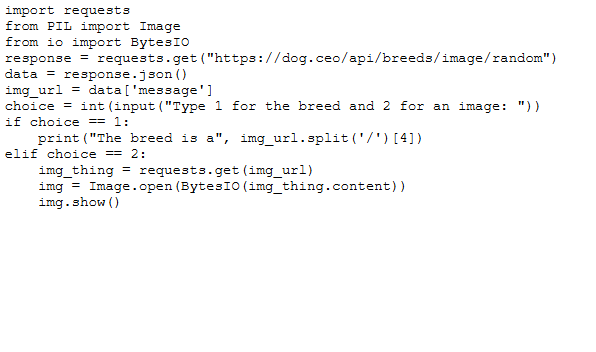
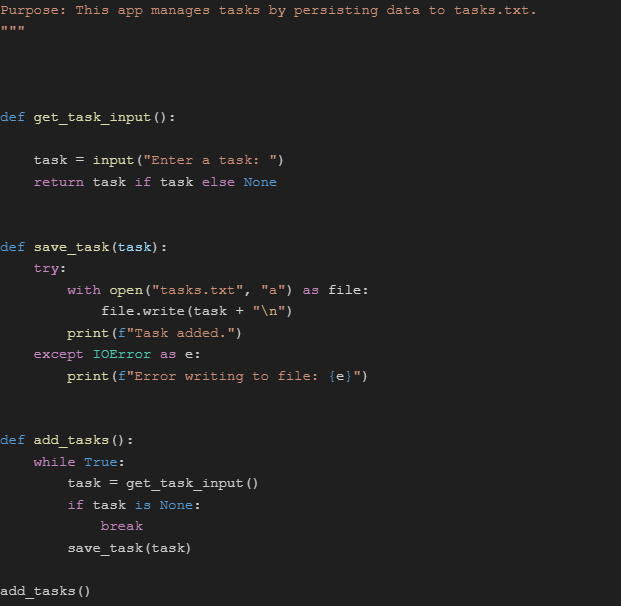

William - 10th Grade Portfolio
My name is William Holley and I am a student at the Morris County Vocational School District. I am in the computer science academy and I have learned arduino wiring, logic in Python, Java, and Cpp. In the future I am going to be majoring cybersecurity or going into AI development. Listed below are some cool projects I have coded this year on my journey of learning python.
Compression - Python
During the compression lab I learned how to compress an image using code with lossy or lossless. This program solves the problem of file sizes when uploading.

Input Processing Output - Python
During this lab I created a program where you can choose 1, 2, or 3 players and the one closest to the number would win. This program helps connect friends together and also serves as a way to pass time when alone.

API - Python
I coded this program to use the dog.ceo api to either print a breed or an image of a dog. This program could be used to find a type of dog you like in order to adopt it later.

Task Writer - Python
This program is used to create a list of tasks using python. This program could be used to keep track of what you need to do in daily life.
